DREWizja
Instrukcja obsługi — od zdjęcia szkicu do PDF dla klienta
1. Zdjęcie szkicu→2. Twój czat AI→3. Sprawdzenie→4. Model 3D→5. Kolory→6. PDF
Adres aplikacji: https://js-3web.github.io/DREWizja/
Dotyczy wersji aplikacji z listopada 2026 r. Numer wersji widać w prawym górnym rogu aplikacji.
1. Co to jest i czego potrzebujesz
DREWizja zamienia Twój odręczny szkic zabudowy (kuchnia, garderoba) w model 3D, w którym możesz zmieniać kolory i materiały, a na koniec tworzy PDF dla klienta z widokiem 3D, rysunkami ścian z wymiarami i listą materiałów.
Potrzebujesz:
- telefonu, tabletu lub komputera z przeglądarką (na iPhonie — Safari),
- dowolnego czatu AI, który rozumie zdjęcia: aplikacja Claude albo ChatGPT,
- zdjęcia szkicu z wymiarami w centymetrach oraz wymiarów pomieszczenia.
Ważne: DREWizja sama nie łączy się z żadną sztuczną inteligencją i nie wysyła nigdzie Twoich projektów. Projekty są zapisane tylko na tym urządzeniu. Internet potrzebny jest tylko czatowi AI.
Instalacja na iPhonie (raz)
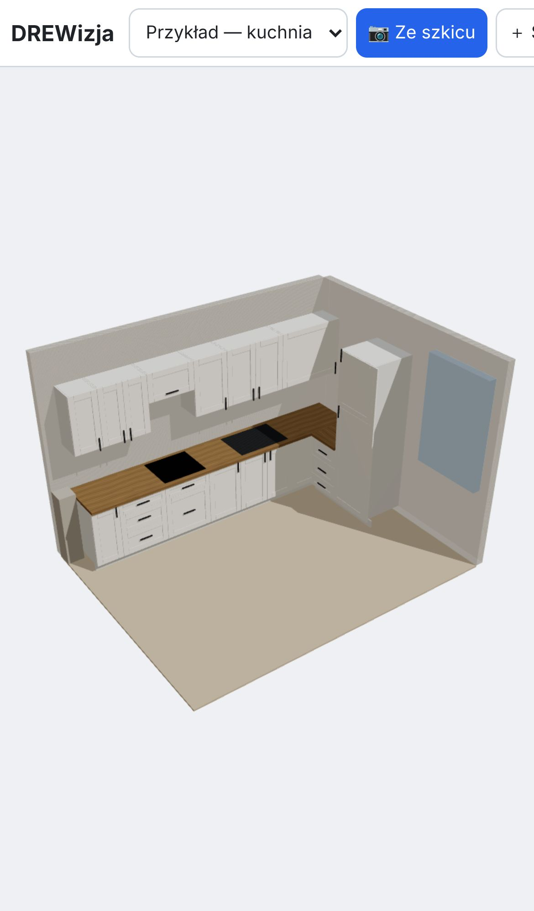
- Otwórz Safari i wpisz adres js-3web.github.io/DREWizja.
- Dotknij przycisku Udostępnij (kwadrat ze strzałką w górę) na dole ekranu.
- Przewiń listę i wybierz „Do ekranu początkowego”, potem „Dodaj”.
- Od teraz uruchamiaj DREWizję ikoną na ekranie telefonu — działa wtedy także bez internetu, a projekty są lepiej chronione przed usunięciem przez system.
Na komputerze
Otwórz adres w Chrome lub Edge. Po prawej stronie paska adresu pojawi się ikona „Zainstaluj” — kliknij ją, a DREWizja będzie się otwierać jak zwykły program.
2. Ekran główny
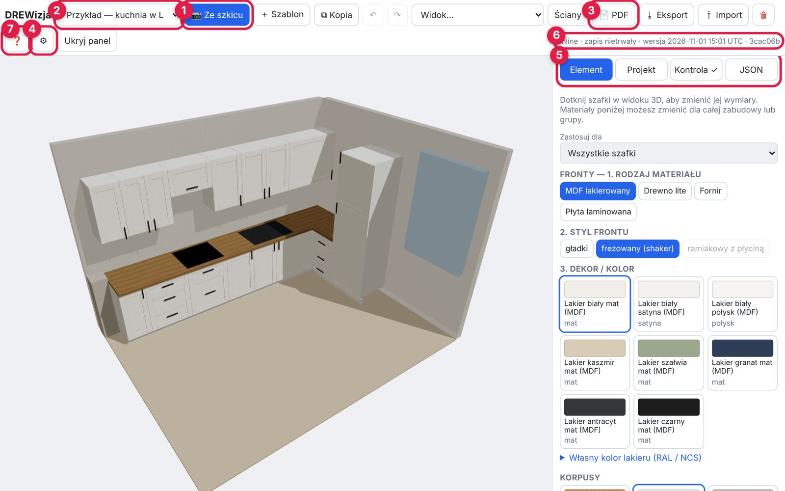
- 1Ze szkicu — zaczynasz nowy projekt ze zdjęcia szkicu (rozdział 4).
- 2Lista projektów — przełączanie między zapisanymi projektami.
- 3PDF — tworzy prezentację dla klienta (rozdział 7).
- 4⚙ Ustawienia — dane Twojego warsztatu (rozdział 3).
- 5Zakładki panelu: Element (wymiary i kolory), Projekt (klient, pomieszczenie), Kontrola (błędy), JSON (dla zaawansowanych — możesz go pomijać).
- 6Pasek stanu: online/offline, rodzaj zapisu i numer wersji aplikacji.
- 7❓ — otwiera tę instrukcję.
Obracanie modelu 3D: telefon — przesuwaj jednym palcem, przybliżaj i przesuwaj dwoma palcami. Komputer — lewy przycisk myszy obraca, kółko przybliża, prawy przycisk przesuwa.
Na telefonie przyciski u góry mieszczą się w jednym wierszu — przesuń pasek palcem w bok, żeby zobaczyć resztę. Przycisk Panel pokazuje i chowa panel z zakładkami.
3. Ustawienia warsztatu (zrób raz)
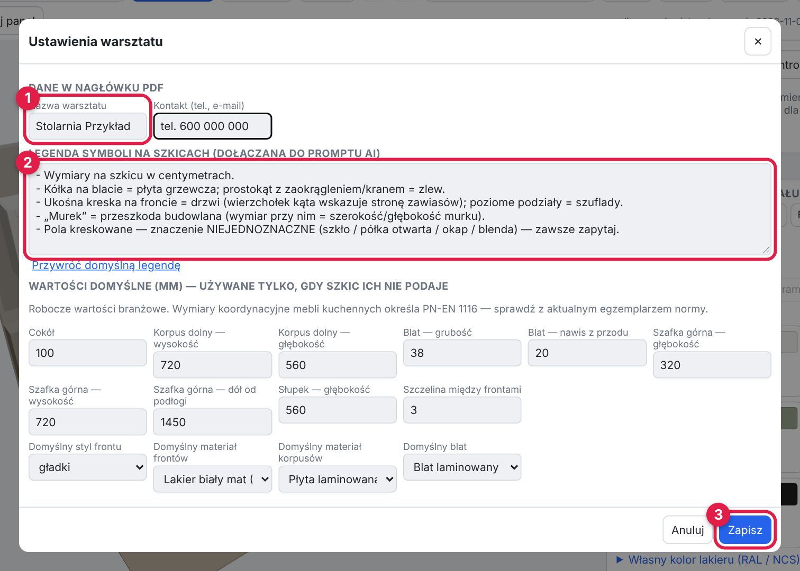
- 1Wpisz nazwę warsztatu i kontakt — pojawią się w nagłówku każdego PDF.
- 2Legenda symboli — jak rysujesz na szkicach (np. „kreskowanie = szkło”). Ten tekst trafia do polecenia dla AI, więc im dokładniej opiszesz swoje oznaczenia, tym mniej poprawek.
- Niżej są wartości domyślne (wysokość cokołu, głębokość szafek itd.). Aplikacja używa ich tylko wtedy, gdy szkic czegoś nie podaje. Sprawdź, czy pasują do Twojego warsztatu.
- 3Kliknij Zapisz.
4. Nowy projekt ze szkicu
Krok 1 — dane pomieszczenia
Kliknij 📷 Ze szkicu. Wpisz nazwę projektu, klienta i wymiary pomieszczenia w centymetrach.
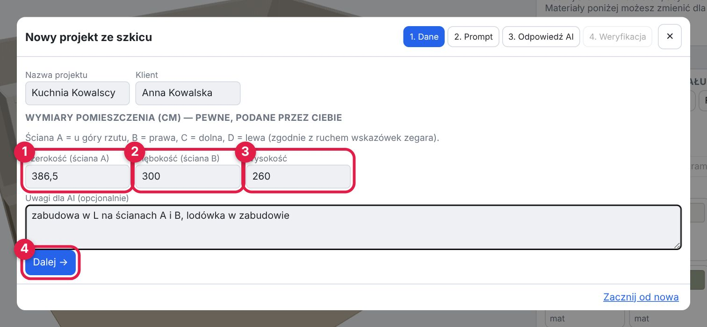
- 1Szerokość = długość ściany A (górnej na rzucie). 2Głębokość = długość ściany B (prawej). 3Wysokość pomieszczenia.
- 4Kliknij Dalej.
Jak liczyć ściany: patrząc na rzut z góry — A u góry, B po prawej, C na dole, D po lewej (zgodnie z ruchem wskazówek zegara). Zabudowa w L zwykle stoi na ścianach A i B.
Krok 2 — polecenie dla AI
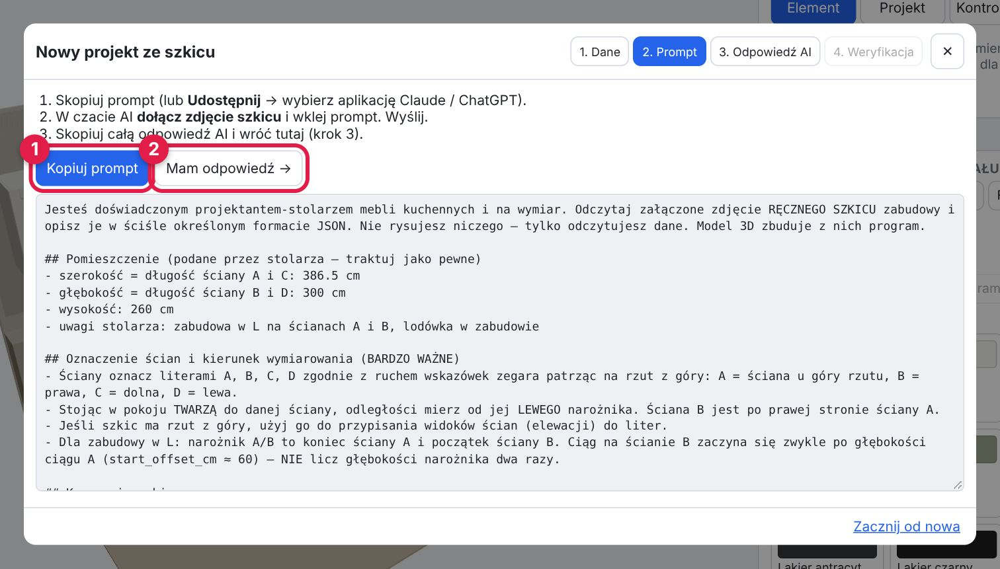
- 1Kliknij Kopiuj prompt (na iPhonie możesz też użyć Udostępnij… i od razu wybrać aplikację Claude lub ChatGPT).
- Otwórz czat AI i zacznij nową rozmowę.
- Dołącz zdjęcie szkicu (ikona spinacza lub aparatu w czacie).
- Wklej skopiowany tekst (przytrzymaj pole wpisywania → Wklej) i wyślij.
- Poczekaj na odpowiedź. AI odpisze blokiem tekstu z nawiasami { } — to jest prawidłowe.
- Skopiuj całą odpowiedź (w czacie jest zwykle przycisk „Kopiuj” pod wiadomością).
- 2Wróć do DREWizji i kliknij Mam odpowiedź.
Zdjęcie szkicu: rób je z góry, przy dobrym świetle, tak żeby cała kartka była w kadrze i liczby były ostre. Im czytelniejsze zdjęcie, tym mniej pól do uzupełniania.
Jeśli przełączysz się do czatu, a telefon zamknie DREWizję — nic się nie stanie. Po powrocie kreator otworzy się w tym samym miejscu.
Krok 3 — wklejenie odpowiedzi
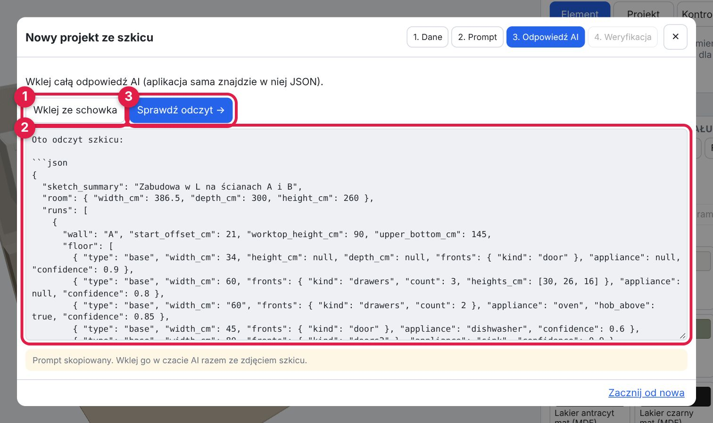
- 1Kliknij Wklej ze schowka albo 2przytrzymaj duże pole i wybierz Wklej.
- 3Kliknij Sprawdź odczyt.
Jeśli pojawi się czerwona lista błędów, najczęściej oznacza to, że skopiowano tylko część odpowiedzi. Skopiuj ją jeszcze raz w całości. Gdy błąd się powtarza, napisz w czacie: „Podaj odpowiedź ponownie, wyłącznie jako blok json w podanym formacie”.
Krok 4 — sprawdzenie odczytu (najważniejszy krok)
AI może się pomylić — tu poprawiasz to, co odczytało, zanim powstanie model 3D.
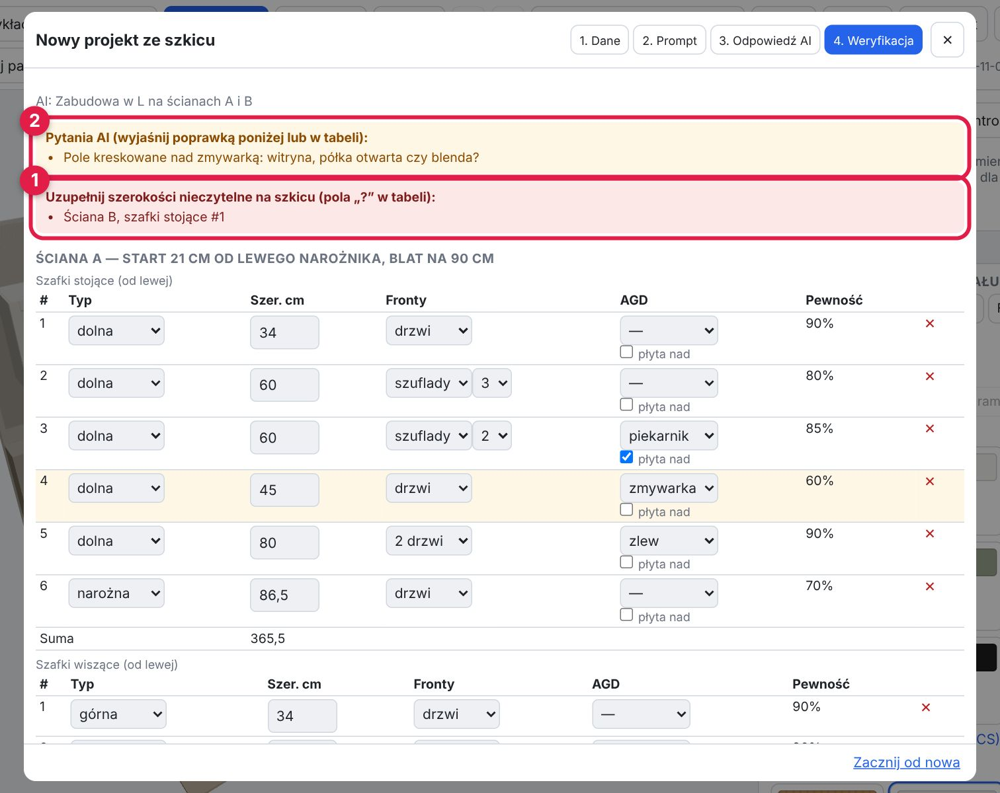
- 1Czerwona ramka — wymiary, których AI nie odczytało. Trzeba je uzupełnić, inaczej projekt nie powstanie.
- 2Żółta ramka — pytania AI i rozbieżności wymiarów (np. suma szafek nie zgadza się z wymiarem całkowitym). Przeczytaj je i porównaj ze szkicem.
Pod ramkami jest tabela szafek każdej ściany, od lewej do prawej, tak jak na szkicu. Możesz zmienić typ szafki, szerokość, rodzaj frontów (drzwi, szuflady…) i AGD (zlew, piekarnik, zmywarka). Zaznacz „płyta nad” przy szafce, nad którą w blacie jest płyta grzewcza. Czerwony ✕ usuwa wiersz.
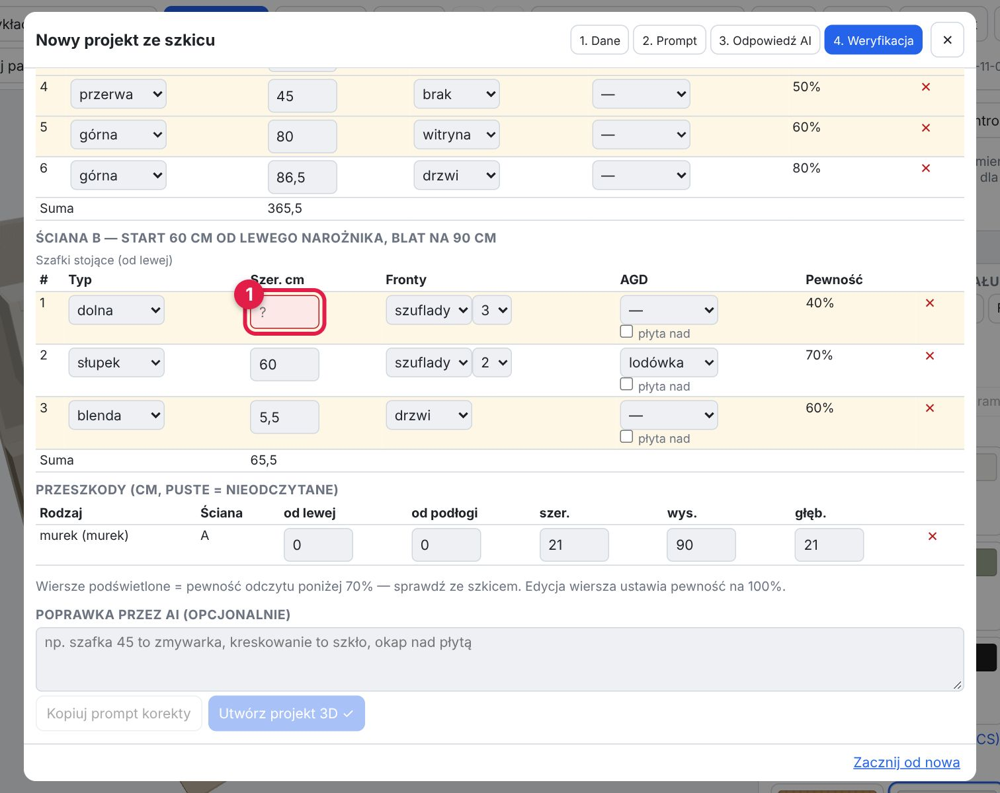
- 1Pole z „?” — wpisz szerokość w centymetrach (np. 45 albo 86,5) i dotknij gdzie indziej.
- Żółte wiersze = AI było niepewne (poniżej 70%). Sprawdź je ze szkicem. Po poprawce wiersz uznawany jest za pewny.
- Wiersz „Suma” pod tabelą pomaga porównać z wymiarem ze szkicu.
- Przeszkody (murek, okno, pion) — puste pola uzupełnij, jeśli znasz wymiar. Murek bez głębokości nie będzie sprawdzany pod kątem kolizji z szafkami.
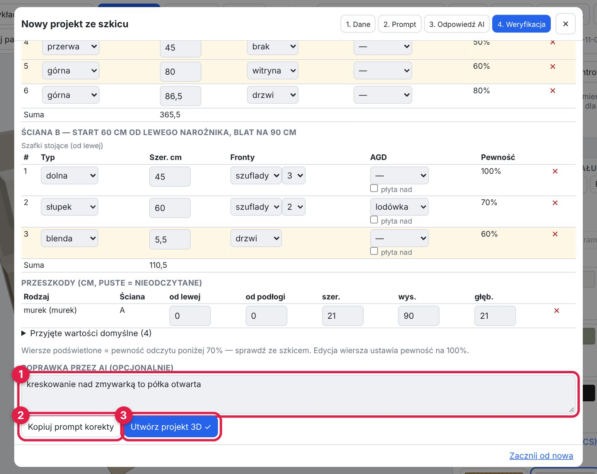
- 12Większe poprawki przez AI (opcjonalnie): wpisz uwagi zwykłymi słowami, np. „kreskowanie nad zmywarką to półka otwarta”, kliknij Kopiuj prompt korekty i wklej go w tej samej rozmowie z AI. Nową odpowiedź wklej znowu w kroku 3.
- 3Gdy wszystko się zgadza — kliknij Utwórz projekt 3D.
Drobne rzeczy szybciej poprawisz sam w tabeli. Prompt korekty przydaje się, gdy AI źle zrozumiało większy fragment szkicu.
5. Praca na modelu 3D
Zmiana wymiarów szafki
Dotknij szafki w widoku 3D — podświetli się na niebiesko, a w zakładce Element pojawią się jej dane.
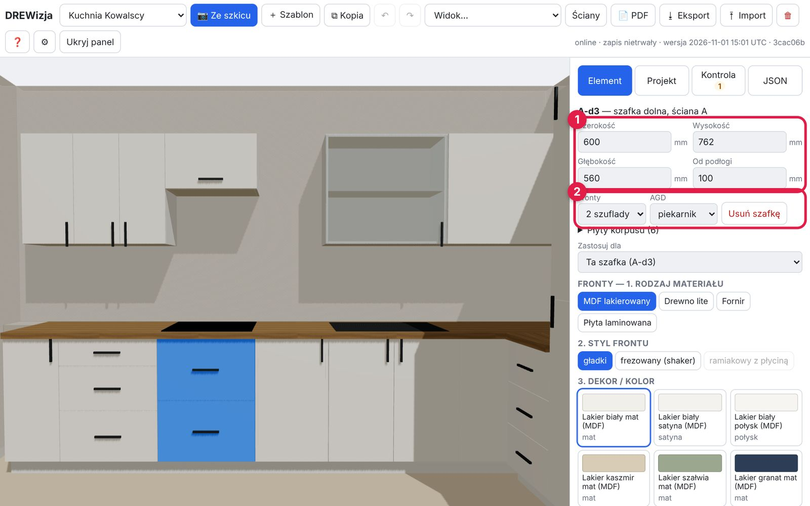
- 1Wymiary w milimetrach (szerokość, wysokość, głębokość, wysokość od podłogi). Wpisz nową wartość i dotknij gdzie indziej — fronty dopasują się same.
- 2Fronty (1 drzwi, 2 drzwi, szuflady, klapa), AGD i Usuń szafkę.
Pomyłka? Przycisk ↶ u góry cofa ostatnią zmianę, ↷ ją przywraca.
6. Kolory i materiały
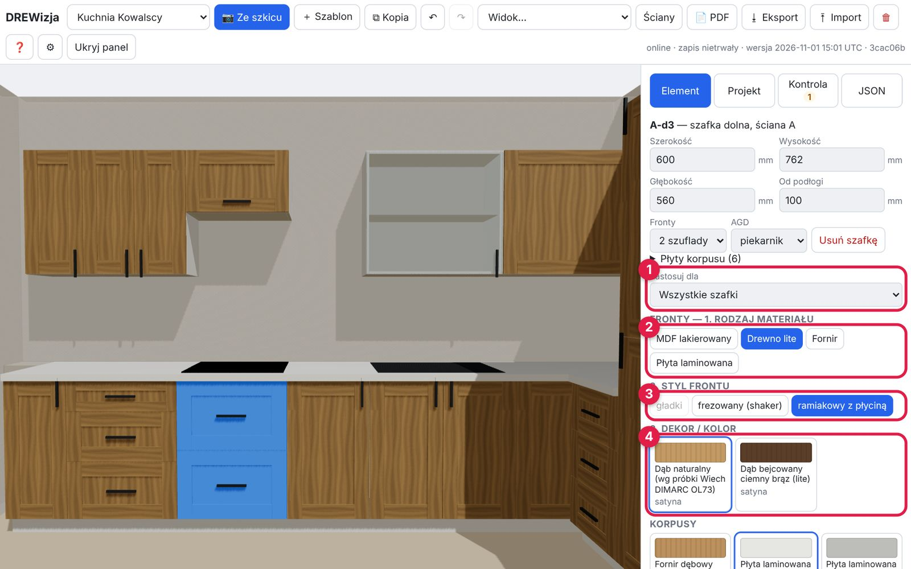
Materiały wybierasz w zakładce Element, poniżej danych szafki, w czterech krokach:
- 1Zastosuj dla — tylko zaznaczona szafka, wszystkie szafki, tylko dolne, tylko górne albo słupki.
- 2Rodzaj materiału — MDF lakierowany, drewno lite, fornir, płyta laminowana.
- 3Styl frontu — gładki, frezowany (shaker), ramiakowy z płyciną. Szare przyciski są niedostępne dla wybranego materiału (np. ramiak z płyty laminowanej).
- 4Dekor / kolor — dotknij próbki.
Niżej znajdziesz korpusy, blat i uchwyty. W MDF lakierowanym jest też „Własny kolor lakieru (RAL / NCS)” — wpisz kod i dobierz kolor na oko; kod trafi do PDF.
Kolory na ekranie są orientacyjne. Ekran nie odda koloru wiernie — ostateczny wybór zawsze na fizycznych próbkach. Taki dopisek jest też w PDF dla klienta.
7. Kontrola i PDF dla klienta
Zakładka „Kontrola”
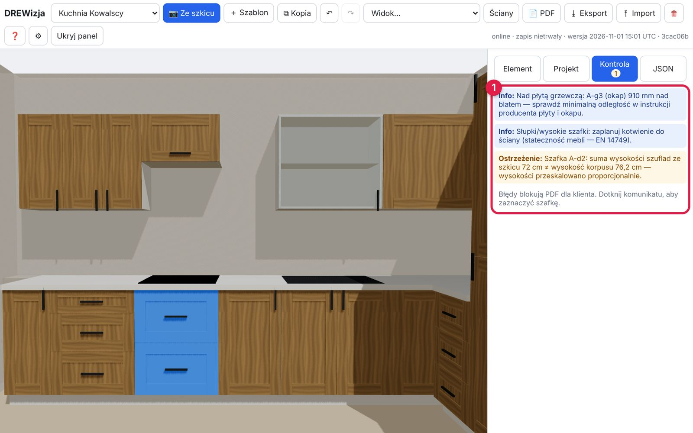
1Aplikacja sama sprawdza projekt. Liczba przy zakładce mówi, ile jest uwag:
| Rodzaj | Co znaczy | Co zrobić |
|---|
| Błąd (czerwony) | Coś się fizycznie nie zmieści: szafki dłuższe niż ściana, wyższe niż sufit, kolizja, szafka w murku. | Popraw wymiary. Błędy blokują PDF. |
| Ostrzeżenie (żółty) | Coś nietypowego, np. zmywarka 50 cm, rozbieżność wymiarów na szkicu. | Sprawdź. Nie blokuje PDF. |
| Info (niebieski) | Przypomnienia: odległość nad płytą wg instrukcji producenta, kotwienie wysokich szafek. | Pamiętaj przy montażu. |
Dotknięcie komunikatu zaznacza szafkę, której dotyczy.
Zakładka „Projekt”
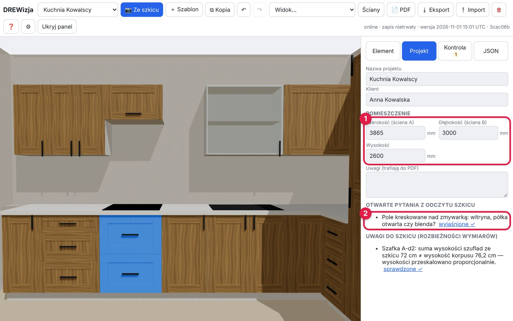
- 1Nazwa, klient i wymiary pomieszczenia (w mm). Pole Uwagi trafia do PDF.
- 2Otwarte pytania z odczytu szkicu — gdy je wyjaśnisz, kliknij „wyjaśnione ✓”.
Tworzenie PDF
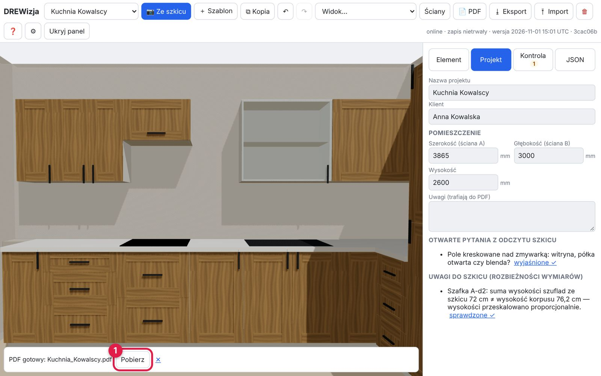
- Kliknij 📄 PDF u góry i poczekaj kilka sekund.
- 1Na dole pojawi się „PDF gotowy” — kliknij Pobierz. Na iPhonie jest też Udostępnij…: wyślesz PDF prosto przez WhatsApp, SMS lub e-mail.
PDF zawiera:
- stronę tytułową z widokiem 3D zabudowy, nazwą klienta i wymiarami pomieszczenia,
- osobną stronę dla każdej ściany z szafkami — rysunek z wymiarami w centymetrach (szerokości szafek, wysokości),
- stronę „Materiały i kolory” — fronty, korpusy, blat, uchwyty, z próbkami kolorów.
Jeśli zamiast PDF pojawi się komunikat „PDF zablokowany” — projekt ma błędy. Otwórz zakładkę Kontrola, popraw je i spróbuj ponownie.
8. Warianty, widoki i kopia zapasowa
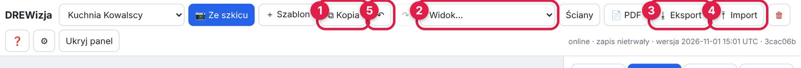
- 1Kopia — tworzy kopię projektu. Użyj jej, gdy chcesz pokazać klientowi dwa warianty (np. biały shaker i dąb) — każdy wariant to osobny projekt na liście.
- 2Widok — gotowe ustawienia kamery: izometria, front ściany A, front ściany B, „wzrok człowieka”.
- 3Eksport — zapisuje projekt do pliku (kopia zapasowa, przeniesienie na inne urządzenie).
- 4Import — wczytuje taki plik.
- 5↶ ↷ — cofnij / ponów.
Przycisk ＋ Szablon tworzy przykładową kuchnię w L — dobra do nauki i zabawy. 🗑 usuwa projekt z urządzenia (zapyta o potwierdzenie). Przycisk Ściany chowa i pokazuje ściany pomieszczenia.
Rób kopię zapasową! Projekty są tylko na tym urządzeniu. Telefon i komputer mają osobne projekty. Wyczyszczenie danych przeglądarki albo usunięcie aplikacji kasuje projekty. Ważne projekty zapisuj przyciskiem Eksport (np. do iCloud, na Dysk Google albo wyślij sobie mailem).
9. Najczęstsze problemy
| Problem | Rozwiązanie |
|---|
| Po poprawce aplikacji nadal widzę stary błąd albo brakuje nowych przycisków. | Telefon używa starej kopii aplikacji. Zamknij DREWizję całkowicie (przesuń ją w górę na liście otwartych aplikacji) i otwórz ponownie. Na komputerze naciśnij Ctrl+Shift+R. Sprawdź numer wersji w prawym górnym rogu. |
| „Nie znaleziono JSON w odpowiedzi”. | Skopiowano tylko część odpowiedzi AI albo AI odpisało zwykłym tekstem. Skopiuj całą odpowiedź albo poproś AI: „Podaj wynik wyłącznie jako blok json”. |
| Czerwone błędy w kroku 3 z nazwami pól (np. type, kind). | AI użyło słowa spoza listy. Poproś w czacie: „Użyj tylko wartości z podanego formatu” i wklej nową odpowiedź. |
| Przycisk „Utwórz projekt 3D” jest szary. | W tabeli są pola z „?” — uzupełnij brakujące szerokości. |
| „PDF zablokowany”. | Projekt ma błędy — zakładka Kontrola. |
| Szafki są w złym miejscu albo na złej ścianie. | Sprawdź w kroku 1 szerokość (ściana A) i głębokość (ściana B). W poprawce dla AI napisz np. „lodówka stoi na ścianie B, nie A”. |
| Nie widzę panelu z zakładkami (telefon). | Przesuń pasek przycisków u góry w bok i dotknij Panel. |
| Zniknęły projekty. | Sprawdź, czy otwierasz aplikację z tej samej ikony / przeglądarki. Jeśli dane zostały wyczyszczone — wczytaj plik z Eksportu przyciskiem Import. |
Ściągawka
- 📷 Ze szkicu → wymiary pomieszczenia w cm → Dalej.
- Kopiuj prompt → czat AI: nowa rozmowa + zdjęcie szkicu + wklej → wyślij.
- Skopiuj całą odpowiedź AI → Mam odpowiedź → wklej → Sprawdź odczyt.
- Uzupełnij pola „?”, sprawdź żółte wiersze i pytania → Utwórz projekt 3D.
- Dotknij szafki → popraw wymiary. Wybierz materiały: zakres → rodzaj → styl → kolor.
- Zakładka Kontrola: zero czerwonych błędów.
- 📄 PDF → Pobierz / Udostępnij klientowi.
- Ważne projekty: Eksport (kopia zapasowa).
Dwa warianty dla klienta? Kopia projektu → zmień materiały → osobny PDF dla każdego wariantu.